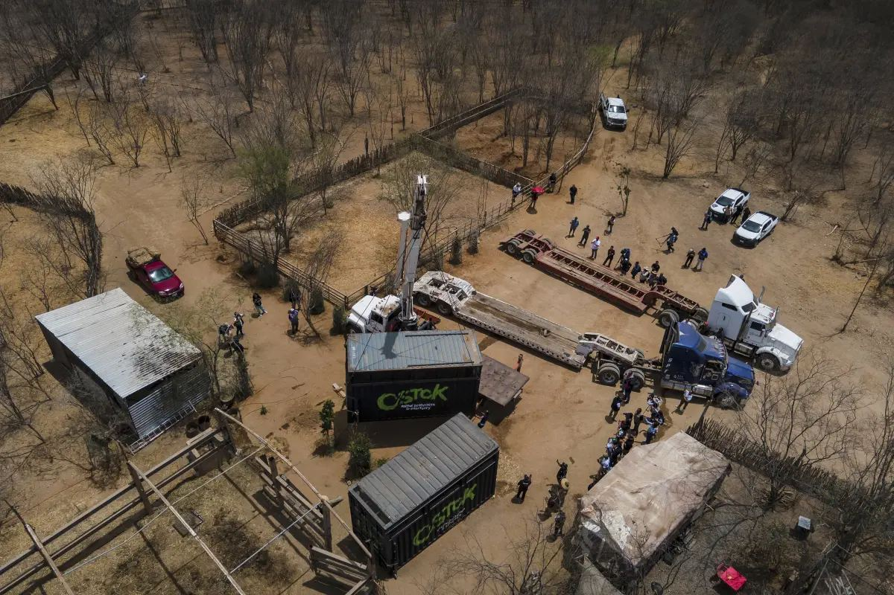

En mayo de 2025, una caravana poco común salió de Culiacán rumbo a Mazatlán. Esta transportaba tigres, jaguares, leones, elefantes y monos; más de 700 animales abandonaban el santuario Ostok porque la violencia había hecho demasiado peligroso permanecer ahí. La imagen fue inédita; eran animales huyendo de la violencia humana. Pero quizá deberíamos mirarla desde otra perspectiva.
Estamos acostumbrados a medir la violencia mediante homicidios, desapariciones o delitos. Pero existen otras señales, menos visibles, que hablan de la misma pérdida de capacidad institucional: cuando una organización abandona sus instalaciones, una familia deja su casa o proteger un ecosistema se vuelve demasiado peligroso.
Sinaloa ofrece hoy un ejemplo. La violencia que golpeó Culiacán se extendió hacia Mazatlán; en la primera semana de agosto, Mazatlán registró 32 eventos violentos y a finales del mes, el gobierno federal envió 1,300 militares para reforzar la seguridad del puerto (El País).
El problema no termina en la seguridad pública. El 24 de agosto, la PROFEPA anunció que fortalecerá la coordinación con otras instituciones de seguridad para atender delitos ambientales en Sinaloa. Que proteger los recursos naturales requiera sentar en la misma mesa a autoridades ambientales, Fiscalía, Marina, Defensa y Guardia Nacional dice algo: en ciertos territorios, proteger a la naturaleza ya no puede separarse de recuperar la capacidad del Estado para gobernarlos.
Otra señal de esta crisis es que tampoco están a salvo quienes defienden derechos. El 29 de agosto, la madre buscadora Alma Rosa Rojo sobrevivió a un ataque armado en Culiacán; su caso recuerda que la violencia no solo se disputa en el territorio, sino que también intenta silenciar a quienes insisten en habitarlo, recorrerlo y exigir justicia.
La paz positiva exige más que la ausencia de violencia: es la existencia de condiciones e instituciones capaces de garantizar justicia, derechos y bienestar. Así, recuperar la paz en Sinaloa no puede significar solo reducir homicidios; también implica recuperar la posibilidad de que comunidades e instituciones vivan, trabajen y decidan sobre su territorio sin que la violencia tenga la última palabra.
La caravana de Ostok merece ser recordada, porque aquellos animales no fueron solo víctimas colaterales de una guerra entre grupos criminales; fueron la evidencia de algo más profundo: cuando la violencia se instala en un territorio, modifica sus reglas, a sus habitantes y hasta aquello que debe ser protegido.
La paz no consiste solo en dejar las armas; consiste en recuperar la capacidad de vivir y de decidir sobre el territorio. Porque cuando la violencia empieza a decidir quién sí puede quedarse, ya no hablamos solo de inseguridad: hablamos de una crisis de gobernanza.
CIPMEX · Centro de Investigación para la Paz México, A.C. · Paz que se piensa, paz que se construye